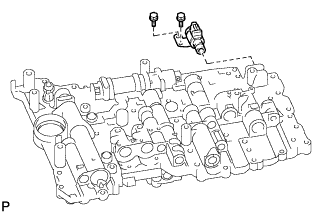

КОРПУС КЛАПАНОВ В СБОРЕ > РАЗБОРКА |
| 1. СНИМИТЕ ЭЛЕКТРОМАГНИТНЫЙ КЛАПАН ПЕРЕКЛЮЧЕНИЯ ПЕРЕДАЧ SR |
|  |
Выверните 2 болта и снимите электромагнитный клапан.
| 2. СНИМИТЕ ЭЛЕКТРОМАГНИТНЫЙ КЛАПАН ПЕРЕКЛЮЧЕНИЯ ПЕРЕДАЧ SLU |
 |
Выверните болт и снимите стопорную пластину электромагнитного клапана и 2 стопорных штифта.
Снимите электромагнитный клапан.
| 3. СНИМИТЕ ЭЛЕКТРОМАГНИТНЫЙ КЛАПАН ПЕРЕКЛЮЧЕНИЯ ПЕРЕДАЧ SL2 |
 |
| 4. СНИМИТЕ ЭЛЕКТРОМАГНИТНЫЙ КЛАПАН ПЕРЕКЛЮЧЕНИЯ ПЕРЕДАЧ SLT |
 |
Выверните болт и снимите стопорную пластину электромагнитного клапана и 2 стопорных штифта.
Снимите электромагнитный клапан.
| 5. СНИМИТЕ ЭЛЕКТРОМАГНИТНЫЙ КЛАПАН ПЕРЕКЛЮЧЕНИЯ ПЕРЕДАЧ SL1 |
 |
| 6. СНИМИТЕ ЭЛЕКТРОМАГНИТНЫЙ КЛАПАН ПЕРЕКЛЮЧЕНИЯ ПЕРЕДАЧ S1 |
 |
Выверните болт и снимите электромагнитный клапан переключения передач S1.
| 7. СНИМИТЕ ЭЛЕКТРОМАГНИТНЫЙ КЛАПАН ПЕРЕКЛЮЧЕНИЯ ПЕРЕДАЧ S2 |
Выверните болт и снимите электромагнитный клапан.
Снимите кольцевое уплотнение с электромагнитного клапана переключения передач.